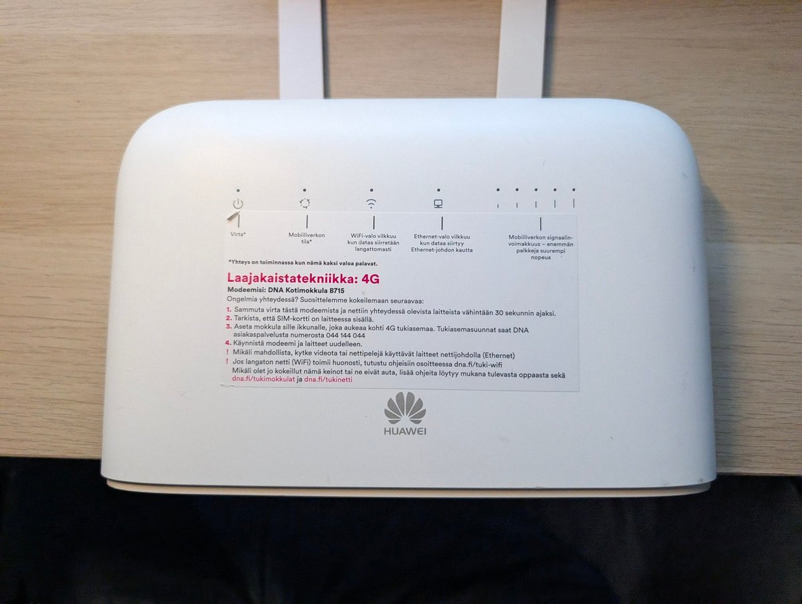
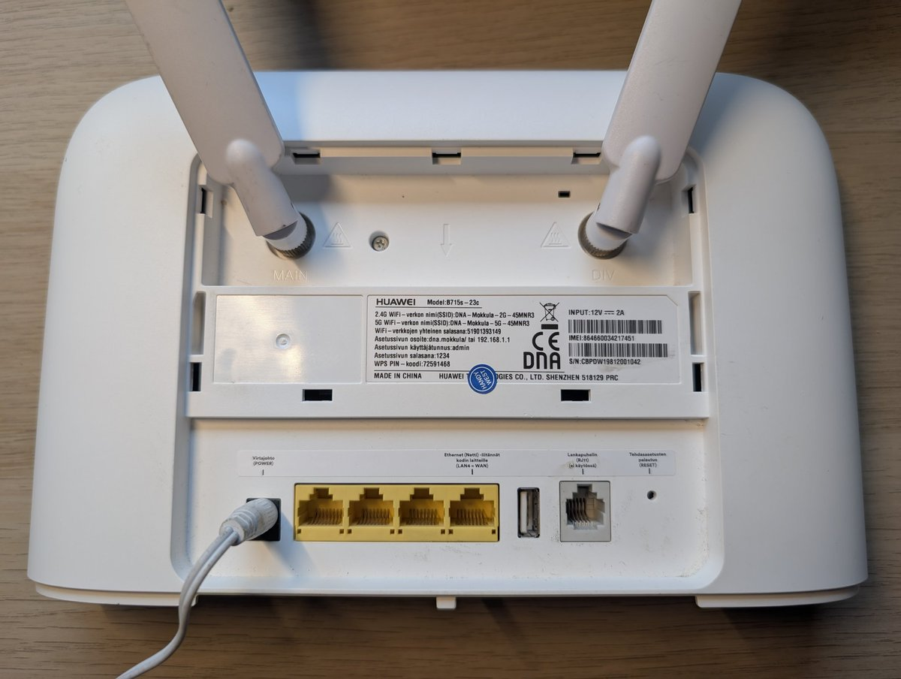
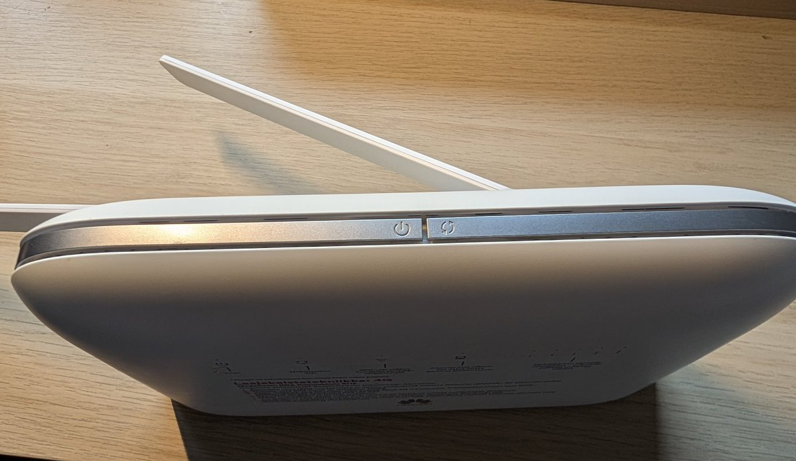

Pavlova☘️
@pavlova233
@mario_2333 定制机性价比还是不错的 )
我之前 100 左右买的运营商版华为 AX3 单从网速方面比我后面 150 收的米好不少 可惜后面貌似刷系统给刷废了 (x
就是折腾要花点时间 如果不需要就更好了w



🍭Mario🐈
@mario_2333
买了一个神秘的增智慧4G路由器，还挺好看倒是，看起来是芬兰运营商淘汰的定制机呢，接下来一段时间应该就这么上网了（
虽然咱非常讨厌华为，但是这个只要30欧，而且千兆有线+LTE Cat 9，就是可以3载波聚合。别的二手就算是淘汰的定制机也都要40~100欧，并且要么缺频段或者只有Cat 6，真香（ https://t.co/3EHMIEAaCq